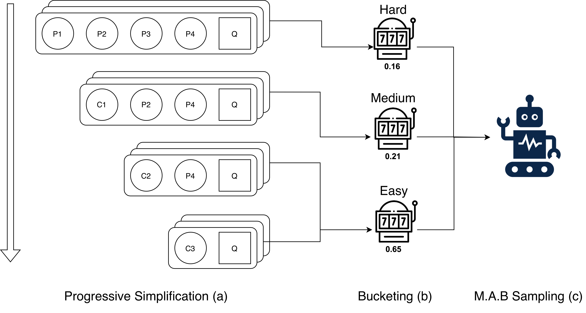
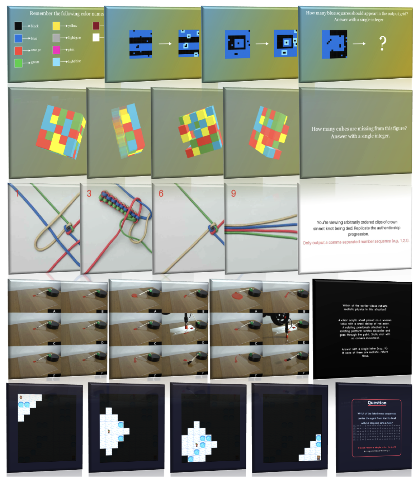
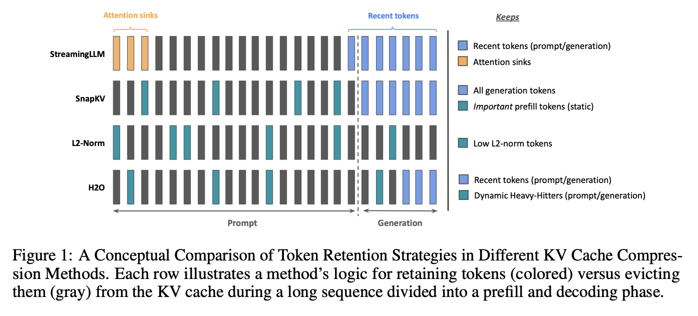
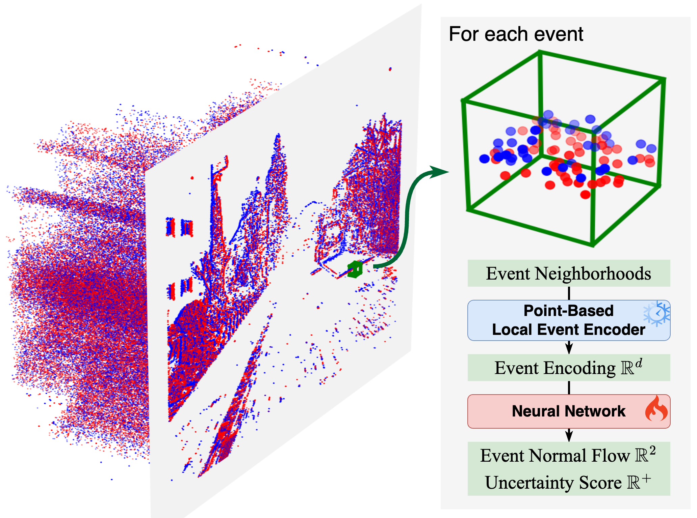
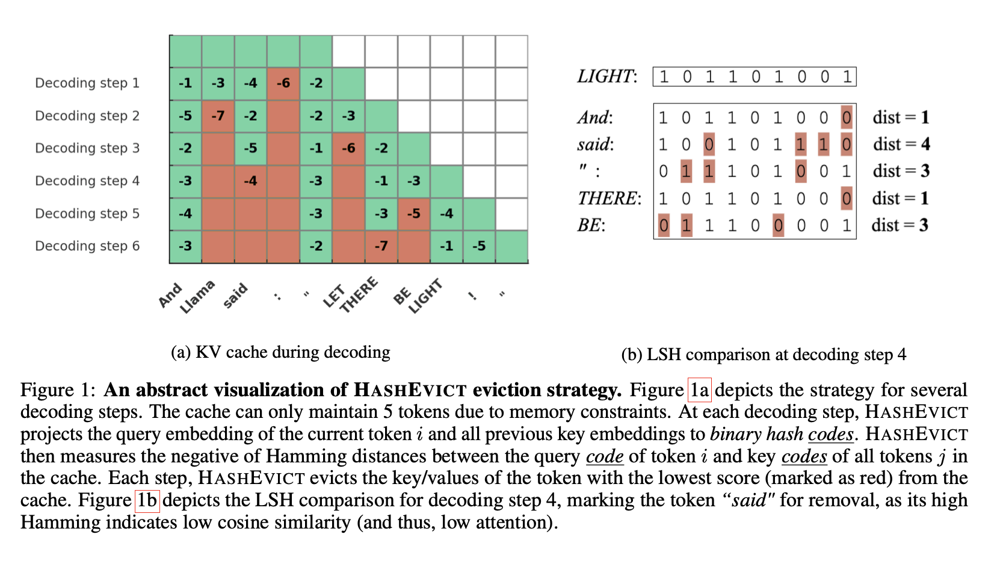

Research Interests
- Machine Learning
- Artificial Intelligence
- LLM Reasoning
- Efficient LLM
News & Updates
- Dec 2025 Hold Onto That Thought to appear in NeurIPS 2025 Efficient Reasoning Workshop.
Publications



Learning Normal Flow Directly From Events

Academic Services
- Reviewer, ICML 2026
- Reviewer, NeurIPS 2026